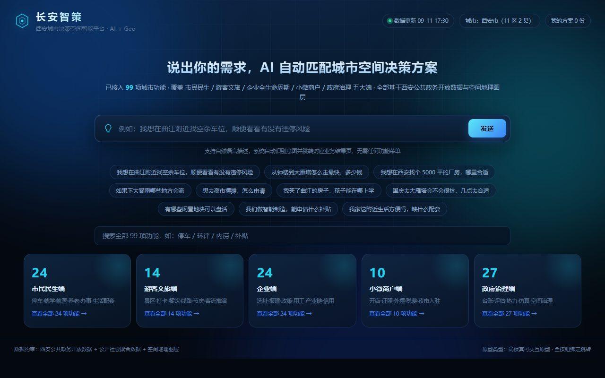
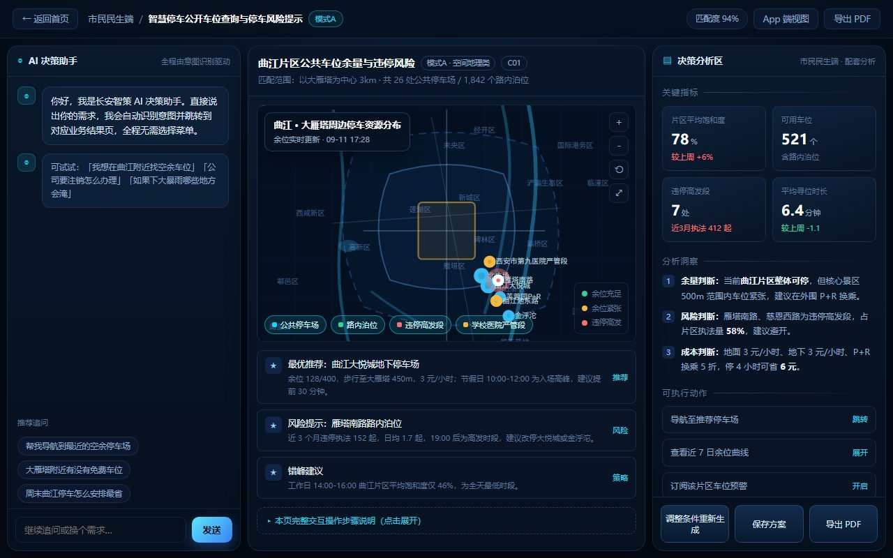
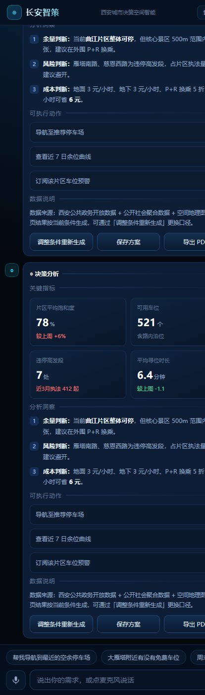
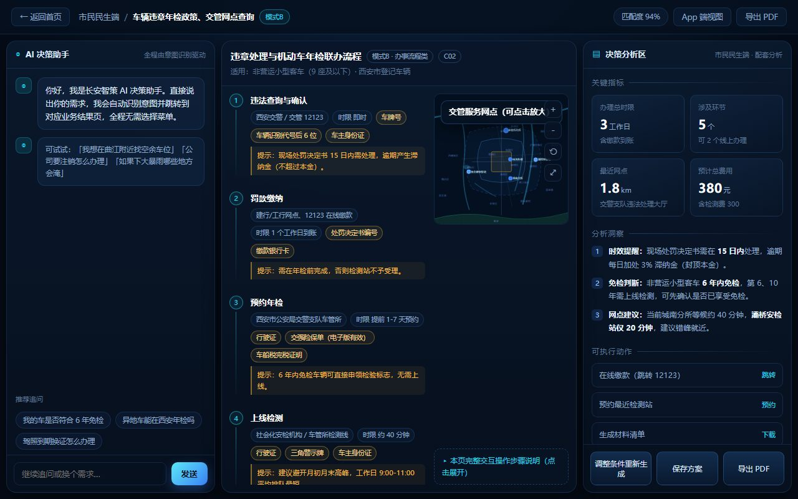
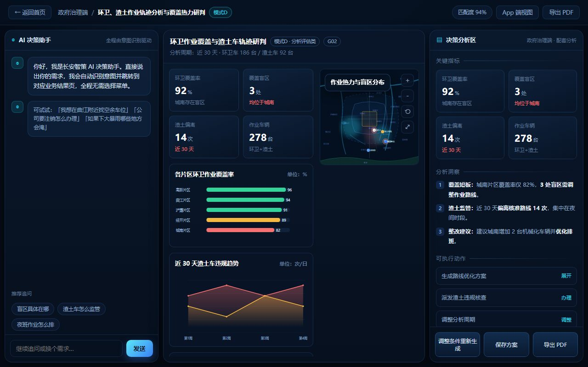
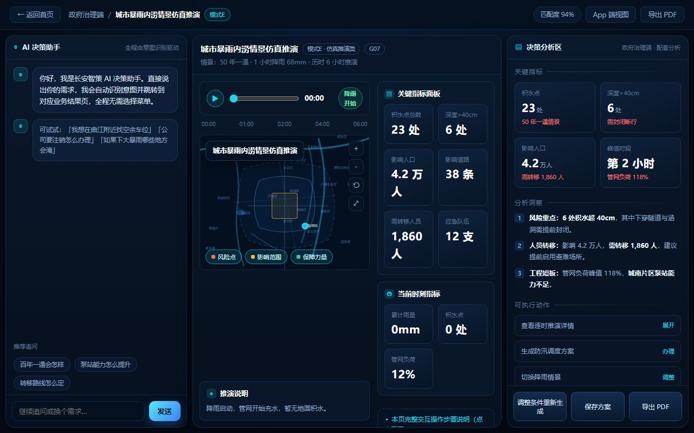

「长安智策」是西安市城市决策空间智能平台，通过 自然语言对话 + 空间地图可视化，为市民、游客、企业、商户、政府五类用户提供城市空间决策服务，覆盖 99 项功能。
一句话理解：像聊天一样说出你的需求（比如"哪里有空车位""办证要几步""下暴雨哪里会淹"），系统立刻把答案变成地图、流程、图表展示给你看。

停车、年检、物业维权、垃圾分类、快递、宠物办证、就学就医、养老、办事等
景区打卡、餐饮、线路、节庆活动、客流推演等
选址、报建、政策补贴、用工、产业链、信用等全生命周期服务
开店、证照、外摆、税费、夜市入驻等
台账、评估、热力研判、内涝/客流仿真、空间治理等
| 方式 | 适用用户 | 说明 |
|---|---|---|
| 手机号 + 短信验证码 | 全部用户 | 最常用，首次登录自动注册 |
| 微信扫码登录 | 市民/游客 | 便捷，绑定手机号后使用 |
| 账号密码 | 企业/政府/管理员 | 由管理员统一分配 |
| 政务内网单点登录（SSO） | 政府治理端 | 对接政务统一身份认证 |
部分功能（如补贴申报、证照办理、企业选址）需 实名认证：个人用户需姓名 + 身份证号；企业用户需统一社会信用代码 + 法人信息。认证后解锁对应权限。
浏览器访问平台网址，进入首页。首页顶部显示「数据更新时间」与「我的方案」数量。
首页展示 5 个角色卡片（市民/游客/企业/商户/政府），点击任意卡片展开该端全部功能清单。
首页搜索框可输入关键词（如「停车」「补贴」「内涝」），即时命中 99 项功能中的对应项。
在输入框用大白话描述需求，如「我想在曲江附近找空余车位」，点击「发送」。
系统自动识别意图，显示匹配置信度（如 94%），并跳转到对应的 PC 端三栏结果页。
左侧为 AI 决策助手对话区，中间为核心展示区（地图/流程/图表），右侧为决策分析区（指标/洞察/动作）。

App 端为 对话式 AI 界面，对齐移动端聊天应用体验。
在 PC 工作台右上角点击「App 端视图」切换；或直接通过移动端小程序/H5 打开。
底部输入框输入需求，点击发送按钮。
点击麦克风按钮开始说话，实时转写文字，说完点「发送这句」或「取消」。
AI 回复以气泡形式呈现，核心展示（地图/图表/流程）与决策分析直接渲染在对话卡片内，无需跳页。

| 模式 | 怎么用 | 交互操作 |
|---|---|---|
| A 空间地理类 | 查看点位分布、查询周边 | 滚轮缩放、拖拽平移、点点位看详情、图层开关、⤢ 放大 |
| B 办事流程类 | 了解办事步骤与材料 | 点击步骤展开材料清单、点机构看地址 |
| C 政策清单类 | 匹配政策与补贴 | 点卡片看申报要点、一键定位办理点 |
| D 分析评估类 | 看评估与短板 | 图表动画、表头排序、搜索筛选、点行定位地图 |
| E 仿真推演类 | 推演内涝/客流情景 | 播放/暂停、拖动时间轴、指标随帧刷新 |
| F 台账统计类 | 盘点与普查 | 搜索、筛选、排序、点行地图定位 |



| 操作 | 位置 | 说明 |
|---|---|---|
| 调整条件重新生成 | 右侧决策区底部 | 修改条件后重新生成结果 |
| 保存方案 | 右侧决策区底部 | 保存当前结果快照到「我的方案」 |
| 导出 PDF | 顶部/右侧 | 导出当前结果页为 PDF（含指标/洞察/流程/点位/明细） |
| 我的方案 | 首页顶部 | 查看所有已保存的方案 |
首页输入「我想在曲江附近找空余车位，顺便看看有没有违停风险」 → 系统识别为 C01 智慧停车 → 进入 PC 三栏 → 中间地图显示停车场余位与违停高发段 → 右侧给出「最优推荐/风险提示/错峰建议」+「导航/查看余位曲线/订阅预警」 → 点击「导航至推荐停车场」跳转导航
输入「帮我规划一天的大雁塔周边游览」→ 识别为游客线路规划 → 地图显示景区、打卡点、餐饮分布 → 右侧给出线路建议与客流预测 → 切换 App 端边走边看
输入「我们企业符合哪些科技补贴」→ 识别为企业政策匹配（模式 C） → 中间显示匹配的补贴政策卡片（金额/条件/窗口/依据） → 点卡片看申报要点 → 一键定位办理点 → 保存方案导出 PDF
输入「我想在曲江开一家餐饮店，需要办什么证」→ 识别为商户开店（模式 B） → 中间显示办证流程步骤（环节/机构/时限/材料） → 点击步骤展开材料清单 → 预约办理
输入「如果下大暴雨哪些地方会淹」→ 识别为 G07 内涝仿真（模式 E） → 中间显示仿真推演（播放/暂停/时间轴） → 指标随帧刷新：积水点、管网负荷、影响人口 → 导出 PDF 作为应急决策依据
| 模块 | 功能 | 说明 |
|---|---|---|
| 模块管理 | 99 项功能上下线、排序、配置 | 新增/编辑模块、设置别名关键词、话术 |
| 数据管理 | 点位、政策、流程、指标维护 | 录入/修正业务数据，审核后发布 |
| 用户管理 | 账号、角色、权限分配 | 五类角色权限控制、实名审核 |
| 意图训练 | 样本管理、模型重训 | 补充训练样本，提升识别精度 |
| 数据源管理 | 外部数据源接入配置 | 配置 API 密钥、同步频率、异常告警 |
| 审计日志 | 操作留痕、安全审计 | 满足等保合规要求 |
管理员在后台录入或通过 Excel/API 导入业务数据（如新增停车场点位）。
系统自动校验字段完整性、坐标范围、去重。
提交审核，审核通过后数据上线，前端即时生效。
发布后自动刷新 Redis 缓存，用户即时看到更新。
| 问题 | 可能原因 | 处理方式 |
|---|---|---|
| 无法登录 | 账号未激活/密码错误 | 找回密码或联系管理员 |
| 意图识别不准 | 表达过于模糊 | 补充关键词重新描述；管理员补充训练样本 |
| 地图不显示点位 | 地图服务异常/坐标错误 | 刷新页面；联系运维检查地图 Key 与数据 |
| 停车场余位不更新 | 数据源断连 | 运维检查数据源 API 状态与同步任务 |
| 导出 PDF 失败 | 浏览器打印组件异常 | 更换浏览器或联系运维 |
| 语音转写无反应 | 未授权麦克风权限 | 在浏览器/系统设置开启麦克风权限 |